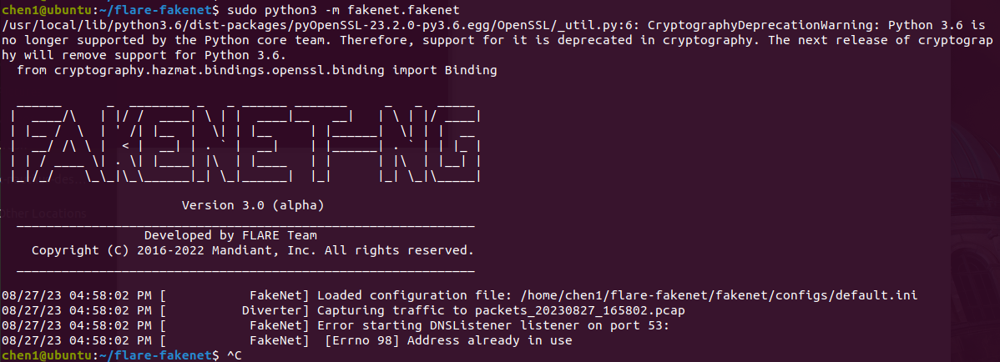
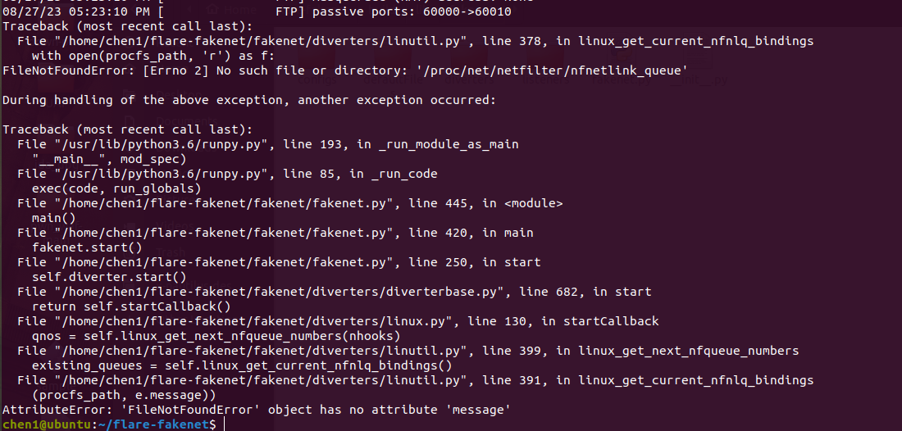

参考：
使用FakeNet-NG改进动态恶意软件分析 - FreeBuf网络安全行业门户
GitHub - mandiant/flare-fakenet-ng: FakeNet-NG - Next Generation Dynamic Network Analysis Tool
十分感慨啊，这个项目2020年就停更了，2020我入学，感觉好像还是很新的项目，但是转念一看已经过去3、4年了，这个项目老了，我也该毕业了。总感觉好像就在昨天，谁能想到我初中数学老师，我们是她带的第一届学生，带了我们三年，现在她也是资深教师了。
光阴似骏马加鞭，日月如落花流水啊。
谁能想到，2018年已经过去5年了，有时候就是这么神奇，有些时间感觉过去很远，但是他却很近，有些感觉很近，但是他确实感觉过去了很久。
Windows使用
直接下载release就行了，双击使用，改改配置文件自定义也行。我在win10下没成功的跑起来，在win7下运行倒挺好的。但是需要在管理员权限下运行。
linux使用
没有release，需要自己编译，编译完事一运行就出问题。按github上说的来就行。尽量使用python36之上的版本来操作。
sudo apt-get install build-essential python-dev libnetfilter-queue-dev
git clone https://github.com/mandiant/flare-fakenet-ng/
python3 setup.py install
在安装的过程中，看着缺啥就pip啥，因为他自动pip比较慢，不知道为啥还会报错，所以看他在下什么另外开一个窗口下就行了。完事就可以 运行了。

但是这里不知道为啥53一直被占用，也是本地的dns解析占用的，这不合理。直接把那几个占用的进程都kill掉，再运行就报错了：

核心错误就是：
FileNotFoundError: [Errno 2] No such file or directory: '/proc/net/netfilter/nfnetlink_queue'
这个错误尚未找到解决办法，issue里的解决办法都扯淡，所以我就卡住了，还是用windows吧。linux就tcpdumps抓就完了，没有欺骗流量，正好减少工作量，直接分析完程序就可以交差了，省的再看流量猜功能了。
使用的命令和Windows上的命令都一样，直接跟到sudo python3 -m fakenet.fakenet后面就可以。
注意：
- 启动程序默认全局hook，会自动进行网址解析等等。
- 配置关系为default.ini ---> custom.ini ---> python程序。
- 响应的文件名称一定要以FakeNet格式命名。否则找不到。
- 流量包会保存到本地。
- 443-htttps；80，8080-http。
一直没机会用，分析的都是僵尸网络，linux上又用不了，Windows又没样本。先放着以后再说吧。